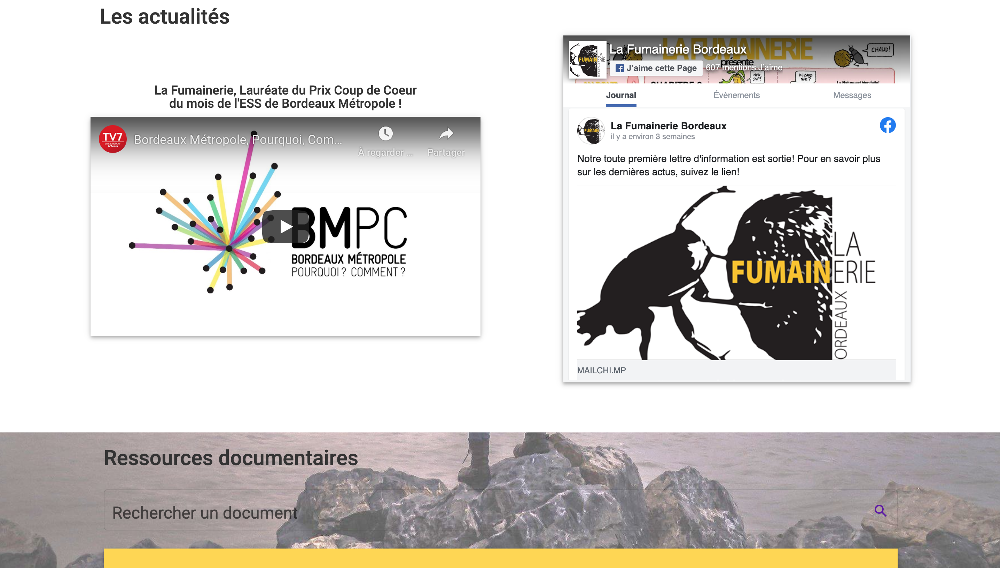
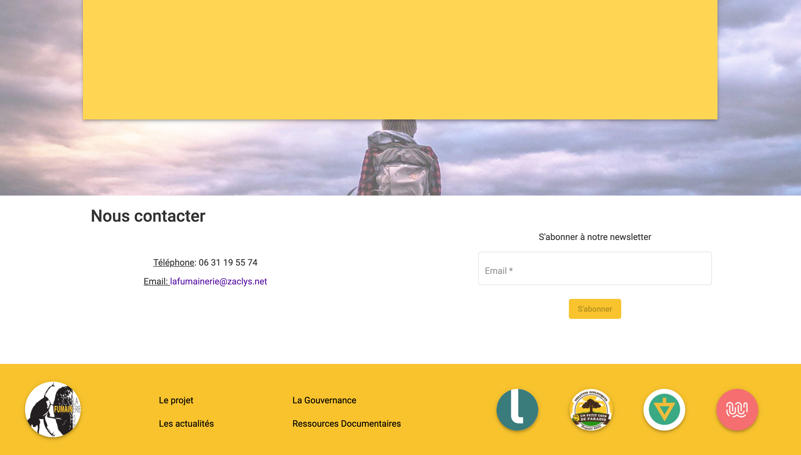

LA FUMAINERIE
Projet réalisé au profit de l'association La Fumainerie-
Contexte:
- Réaliser une application web mettant en relation les acteurs liés au sujet de l'assainissement (producteur, vidangeur et administrateur).
-
Objectifs :
- - L’objectif principale était la réservation de créneaux horaires entre producteurs/vidangeurs.
- - Dans le cadre de son expérimentation l'association devait pouvoir récupérer des informations au sujet des producteurs à des fins statitistiques.
- - L’application dispose également d’une partie permettant de présenter l’association.
-
Tâches et réalisations :
- - Définition des besoins avec le client
- - Conception et réalisation en mode Agile d'une architecture du contenu en respectant la charte graphique définie par le client et en appliquant les bonnes pratiques d’ergonomie UX / UI
- - Création d'un backlog, implémentation et priorisation des UserStory
- - Participer à la planification et au suivi des tâches de développement
- - Participer à la conception et au suivi d'un flux de travail
- - Participer à la mise en place et utilisation d'un gestionnaire de version Git
- - Participer à la modélisation de la base de données en application de la méthode Merise et rédaction des requêtes MySQL
- - Participer à la création d'une Api Rest (3 couches, controller, services, repository)
- - Participation à la conception et au développement de l’application en Angular 8 et NodeJS en responsive sur desktop, tablette et mobile
- - Intégration de la librairie ngx-bootstrap pour l'utilisation de composants Bootstrap alimentés par Angular
- - Intégration de la librairie zone.js pour les tâches asynchrones
- - Intégration de la librairie Jsonwebtoken pour l'authentification
- - Intégration de la librairie NodeMailer pour l'envoie de courriel
- - Intégration de la librairie Multer pour le téléchargement de fichiers
- - Intégration des librairies RxJS et tslib
- - Participer à la configuration de l'hébergement en ligne de l'application dans le cadre du déploiement et de l'intégration continue avec CapRover (page site en construction, version site vitrine, site accessible par les utilisateurs enregistrés)
- - Animation et participation au Scrum meeting (Agile) hebdomadaires (lancement, rétrospective, démonstration)
- - Participation au démonstrations avec le client en présenciel ou en visioconférence
- - Participation aux revues de code
- - Tenue du rôle tournant de Scrum master

